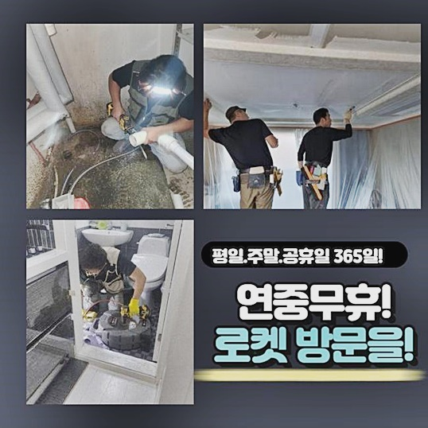
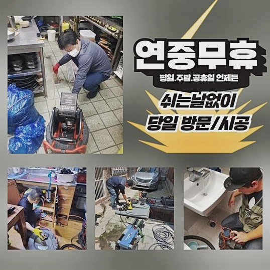
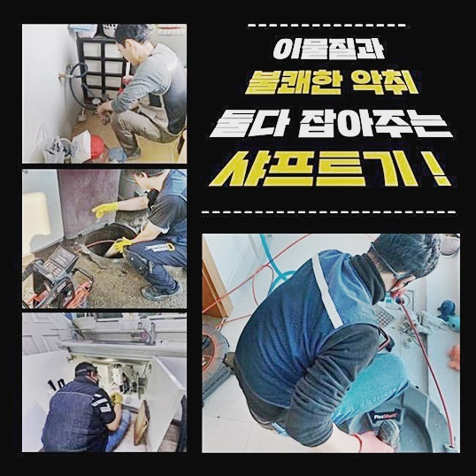
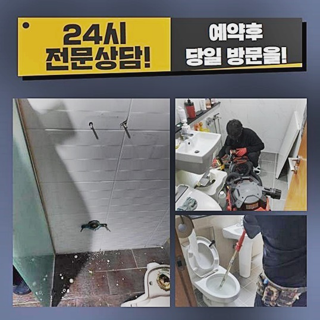
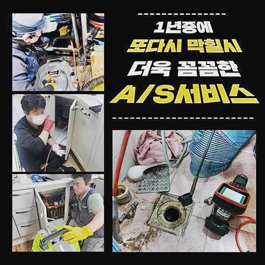

🏠 인천 송현동세탁실뚫음 금곡동 배관뚫기 해결방법
인천 하수구막힘 전문 시공 후기

📋 작업 개요
- 위치: 인천
- 서비스 유형: 하수구막힘, 배관막힘, 역류해결, 뚫는업체, 배관청소, 고압세척, 악취차단
- 작업 일시: 2024. 6. 9. 17:14
- 업체명: 하수구수사대 (010-5615-2118)
🔍 문제 상황
인천 송현동세탁실뚫음 금곡동 배관뚫기 해결방법
하루에도 여러 번 쓰는 하수도에 나타난 막힘 증세를 처리하기 위한 목적으로 찾았던 장소는 고층 아파트 건물 내에 살고 계시던 분으로 욕실 내부의 막힘으로 고충이 이만저만이 아니라고 접수를 받고서 출장갔던 사례입니다
초인종을 누르고 들어가서 바로 욕실 문을 열고 급히 이동하여 배수구 차단이 빚어진 모양새를 진단내려보니 사용했던 생활용수가 전혀 배출되지 못한 채 정지해 있는 물웅덩이를 발견할 수 있었습니다
먼저 머리카락 등의 찌꺼기는 석션을 거쳐서 환경을 더욱 맑게 시야를 틔우고 상태로 변모시킨 다음에 바닥부에 설치되어 있는 포집기능의 트랩을 탈착하여 배관의 내외부를 살피는 것이 일반적 체계입니다
깊숙한 라인을 따라 확인했더니 하수구막힘이 생긴 원인은 단단한 석회물질일 듯 했습니다
석회성 입자가 이 안에 자리한 원인은 정확히 꼬집고 특정짓기는 어려운데 온수로 인해 미네랄이 결정화되어 배관 일부에 축적되며 밀도감있게 뭉치는 자연 분해가 힘든 고체가 되어 떡하니 차지하는 겁니다
석회가 생겨버린 현장은 쉽게 풀어지지 않으며 따개비처럼 붙어 있으니 막힘을 처리할 수 있는 가장 이상적인 방법을 도출하지 못할 경우는 근방의 배관 벽면에 타격감만 주고 마는 결과가 될 수 있어요
여러 형태와 구조의 장소에서 발생된 자연 분해가 힘든 고체가 되어 인한 사안을 처리해왔기에 현장 조건의 판별을 잘 실시해서 해당 배수로에 적합한 장치와 도구를 선별한 이후 청소 작업에 시작해 보도록 할게요

🔎 원인 분석
💡 전문가 진단: 정밀 진단 장비를 사용하여 슬러지의 고착 여부를 판명하고 타격/세척 작업을 실시했습니다.
이번 배수로의 초입에는 석회물질이 소박하게 머무르고 있어서 배관카메라를 동원하여 퍼져나간 양상을 재차 체크를 해줬습니다
배수관으로 넣자마자 보이는 곳에 허옇게 말라붙은 석회가 맞물려 있었고 물이 전혀 빠지지 못할 정도로 고착된 형상은 아니었는데 다른 머리카락이나 먼지가 달라붙기 좋은 보여서 당장 제거해야 할듯 했어요
초입을 지나 아래로 내시경 기기를 조심스레 진입시키는 과정에서 물의 정체가 심각하게 생겨버린 지점이 실시간으로 드러났는데 오물 조각 마저도 빠져나가지 못하고 있는 원인은 거대한 석회석이 퉁퉁 불어버렸을 것을 보고 깨달음을 얻었죠
자연 분해가 힘든 고체가 되어 인한 막힘을 제대로 극복하려면 고압살균기나 플렉스샤프트를 쓰는 방식 두가지로 예시를 들 수 있습니다
강력한 샤프트나 고압세척은 비숙련자가 조작하면 다치게 될 위험이 있으니 이 장비들로 청소에 임할 때는 세기 조절에 신경써서 기능을 발휘해야 하죠
석회는 접착력이 좋다보니 손상을 야기할 수 있으므로 유연하게 녹여내 주는 석회 연화제를 활용하는 방식으로 청소에 들어갑니다
꼼꼼히 보면서 배수관의 타입과 내구도를 봤더니 취약체는 없었기에 클리너를 부어도 되겠다고 결정하게 됐네요
먼저 클리너를 주입하여 석회의 밀도를 약화시키고 샤프트를 가동하여 잔여한 찌꺼기를 긁어내는 단계까지 연결해서 해보겠습니다
석회 세정제를 구멍에 넣고 화학적으로 변성시킬만한 시간을 거치고 나니 배관 속에 엄청난 거품이 피어오르는 것을 목격할 수 있었는데요

🔧 작업 과정
공기방울이 생기는 현상은 응집했던 석회성분이 적절히 먹혀 들어갔다는 것으로 보면 됩니다
원활한 화학 작용을 하도록 기다림의 시간을 보낸 후 잠잠해졌을 때 석션기로 내부에 뭉친 거품을 소거한 다음 샤프트를 운용하여 모발과 때 같은 다른 이물질도 추스려서 모조리 소거시켜 줍니다
플렉스 샤프트의 노커로 초점을 두고 청소할 것은 막힘을 유발한 피부 껍질과 비누나 물 때 같은 구성물이었고 앞선 과정에서 석회질과 함께 뭉쳐있는 것을 눈치 챘었습니다
샤프트를 돌리면서 내부를 정돈할 때는 배관에 원심력으로 회전하면서 생겨날 수 있는 균열이나 금같은 문제 요소를 만들지 않으려고 실시간으로 모니터링하며 청소를 이어가게 됩니다
빨판처럼 달라붙은 이물질을 시작점으로 할당하여 집중해서 세척하니 어느순간 각종 성분이 뭉친 오염원이 다이어트되는 모습을 영상에 보여지더라고요
첨단 장비가 문제성 배관에 진입해 오염물을 긁어내고 있으며 배관의 종류나 작업분량에 따라 마감까지 필요한 시간은 약간 달라질 수 있습니다
작업 전에는 물이 흐름성을 잃은 상태로 오물이 심각한 상태였지만 종합적인 솔루션을 접목해 드림으로써 물만 고여있던 샤워실 배수로는 티끌 하나 남지 않은 개운한 모습으로 변모했어요
이 단계에서 하수구청소를 마감하는 것이 아니라 내부에 떠다니는 조각이라도 완벽하게 사라질 수 있게 거듭 반복하고 있습니다
작다고 무시하고 내버려두면 재결합하여 새로운 장애물을 조성할 수 있으니 끝까지 개운함을 느끼실 수 있도록 청소기로 빨아당겨 소거했어요
배수구 표면 쪽은 접근하기 쉬운 위치이니 머리카락도 모아서 별도로 버린다고 해도 고객님의 입장에서는 거의 미지의 영역인 배수로는 관리하기가 까다로우니 저희가 할 수 있는 한에서는 모두 처리해 드려야 한다고 여기고 노력하고 있습니다
앞선 절차가 잘 수행됐는지를 기다려주신 의뢰인분과 동시에 물이 잘 내려가는지 성능 확인과 내시경을 통한 탐지를 동시에 보여드릴 수 있는 최종점검만 남아 있네요
배관 맞춤형 카메라를 안쪽으로 내려보내서 설치하고 양동이에 물을 받아 한꺼번에 흘러가는 양상을 보는게 배수검사이며 실이용자인 고객님이 쓰셨을 때 속이 시원하다고 느끼실지 사전에 알아보는 것이죠
물이 원활히 나가고 역류나 정체의 징후도 나타나지 않는 현황을 눈과 장비로 더블체크를 해보니 봉인되게 만든 장애물이 정리된 상태라는 것이 느껴지게 되었습니다

✅ 작업 완료
답답하던 막힘이 뻥 뚫리고 마치 새것처럼 변모한 통로도 쭉 보여드리고 앞으로 배관을 쓰면서 기억하면 좋을 실용적 조언을 요점정리해서 전달해 드리고 사무실로 돌아왔습니다
하수구의 고질적인 막힘은 도구로 홀로 여러 번 시도하셔도 약간 구멍만 날 뿐 효과적인 물길은 나지 않으니 전문공의 스킬과 장비의 힘이 들어가야 하는 부분입니다
연속적인 막힘으로 고생하거나 세월아 네월아 흐르는 물의 배수 과정과 같은 개선점이 안보이는 고장으로 고생을 하고 계시면 저희에게 맡겨주시기바랍니다
어떠한 설비 문제가 있으셔도 편안한 마음으로 전달해 주시면 내 일처럼 생각하겠습니다



⚠️ 하수구 배관 막힘 예방 및 관리 가이드
- ✅ 머리카락, 비닐, 물티슈 등 물에 분해되지 않는 이물질은 하수구 유입을 절대 금지해 주세요.
- ✅ 하수구 거름망을 씌우고 모여진 이물질은 주기적으로 쓰레기통에 바로 비워주셔야 합니다.
- ✅ 배관 노후가 심할 경우 이물질이 더 쉽게 걸리므로 주기적인 배관 세척(고압세척 등)을 권장합니다.
- ✅ 작업 후 1년 이내 재발 시 하수구수사대에서 무상 A/S 보증 서비스를 제공합니다.
💡 핵심 정리
- 확실한 장비 작업(내시경 점검 및 샤프트 스케일링)으로 원인을 뿌리 뽑습니다.
- 작업 후 1년 이내에 동일한 부위 재발 시 100% 무상 A/S 서비스를 보장합니다.
- 서울 · 경기 · 인천 전 지역에 24시간 언제든 긴급 출동할 수 있도록 항시 대기 중입니다.
❓ 자주 묻는 질문 (FAQ)
🚨 인천 하수구막힘 문제로 고민이신가요?
정확한 원인 진단과 확실한 시공으로 재발 없는 해결을 약속드립니다.
24시간 긴급 출동 | 서울 · 경기 · 인천 전지역 | 1년 내 재발 시 무상 A/S